GitHub
github限制
github库和文件大小限制
What is my disk quota? - GitHub Docs#file-and-repository-size-limitations
File and repository size limitations
What is my disk quota? - GitHub Docs#file-and-repository-size-limitations
File and repository size limitations
To ensure performance and reliability for our users, we actively monitor signals of overall repository health. Repository health is a function of various interacting factors, including size, commit frequency, contents, and structure.
We recommend repositories remain small, ideally less than 1 GB, and less than 5 GB is strongly recommended. Smaller repositories are faster to clone and easier to work with and maintain. Individual files in a repository are strictly limited to a 100 MB maximum size limit. For more information, see "Working with large files."
If your repository excessively impacts our infrastructure, you might receive an email from GitHub Support asking you to take corrective action. We try to be flexible, especially with large projects that have many collaborators, and will work with you to find a resolution whenever possible. You can prevent your repository from impacting our infrastructure by effectively managing your repository's size and overall health. You can find advice and a tool for repository analysis in the github/git-sizer repository.
Note: If you add a file to a repository via a browser, the file can be no larger than 25 MB. For more information, see "Adding a file to a repository."
We recommend repositories remain small, ideally less than 1 GB, and less than 5 GB is strongly recommended. Smaller repositories are faster to clone and easier to work with and maintain. Individual files in a repository are strictly limited to a 100 MB maximum size limit. For more information, see "Working with large files."
If your repository excessively impacts our infrastructure, you might receive an email from GitHub Support asking you to take corrective action. We try to be flexible, especially with large projects that have many collaborators, and will work with you to find a resolution whenever possible. You can prevent your repository from impacting our infrastructure by effectively managing your repository's size and overall health. You can find advice and a tool for repository analysis in the github/git-sizer repository.
Note: If you add a file to a repository via a browser, the file can be no larger than 25 MB. For more information, see "Adding a file to a repository."
github大文件
Working with large files - GitHub Docs
Working with large files - GitHub Docs
github发布二进制大文件
Distributing large binaries - GitHub Docs
Distributing large binaries
Distributing large binaries - GitHub Docs
Distributing large binaries
Some projects require distributing large files, such as binaries or installers, in addition to distributing source code.
If you need to distribute large files within your repository, you can create releases on GitHub. Releases allow you to package software, release notes, and links to binary files, for other people to use. For more information, visit "About releases."
We don't limit the total size of the binary files in the release or the bandwidth used to deliver them. However, each individual file must be smaller than 2 GB.
Tip: If you regularly push large files to GitHub, consider using Git Large File Storage (Git LFS). For more information, see "Versioning large files."
If you need to distribute large files within your repository, you can create releases on GitHub. Releases allow you to package software, release notes, and links to binary files, for other people to use. For more information, visit "About releases."
We don't limit the total size of the binary files in the release or the bandwidth used to deliver them. However, each individual file must be smaller than 2 GB.
Tip: If you regularly push large files to GitHub, consider using Git Large File Storage (Git LFS). For more information, see "Versioning large files."
github网页限制
About GitHub Pages - GitHub Docs#usage-limits
Usage limits
About GitHub Pages - GitHub Docs#usage-limits
Usage limits
GitHub Pages sites are subject to the following usage limits:
GitHub Pages source repositories have a recommended limit of 1GB. For more information, see "What is my disk quota?"
Published GitHub Pages sites may be no larger than 1 GB.
GitHub Pages sites have a soft bandwidth limit of 100GB per month.
GitHub Pages sites have a soft limit of 10 builds per hour.
If your site exceeds these usage quotas, we may not be able to serve your site, or you may receive a polite email from GitHub Support or GitHub Premium Support suggesting strategies for reducing your site's impact on our servers, including putting a third-party content distribution network (CDN) in front of your site, making use of other GitHub features such as releases, or moving to a different hosting service that might better fit your needs.
Published GitHub Pages sites may be no larger than 1 GB.
GitHub Pages sites have a soft bandwidth limit of 100GB per month.
GitHub Pages sites have a soft limit of 10 builds per hour.
在github上下载了别人的代码，想把自己写好的代码贡献给他
在对方仓库的首页上点 fork，分叉一份到自己名下
创建分支，分支名尽量清晰，尊重对方的规范，比如 bugfix-some-thing-should-be-right
开发，测试，编写测试用例，写清楚文档
推到自己的仓库
在这个分支上，会看到一个“Create Pull Request”的按钮，按下创建 PR
对方会审查你的 PR，如果的确有用，他就会合并
整个过程，都需要遵守对方的要求，比如代码规范、分支 PR 的命名规范、文档、测试用例的规范等
创建分支，分支名尽量清晰，尊重对方的规范，比如 bugfix-some-thing-should-be-right
开发，测试，编写测试用例，写清楚文档
推到自己的仓库
在这个分支上，会看到一个“Create Pull Request”的按钮，按下创建 PR
对方会审查你的 PR，如果的确有用，他就会合并
整个过程，都需要遵守对方的要求，比如代码规范、分支 PR 的命名规范、文档、测试用例的规范等
开源协议
如何为你的代码选择一个开源协议 - 刘哇勇 - 博客园
主流开源协议之间有何异同？ - 知乎
MIT许可协议具体限制了什么？ - 知乎
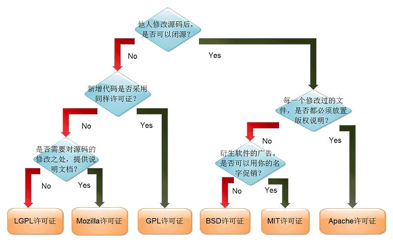
ABC 时代 GPL 许可证传染性问题探讨 - 知乎
五种开源协议的比较(BSD，Apache，GPL，LGPL，MIT)
主流开源协议之间有何异同？ - 知乎
MIT许可协议具体限制了什么？ - 知乎
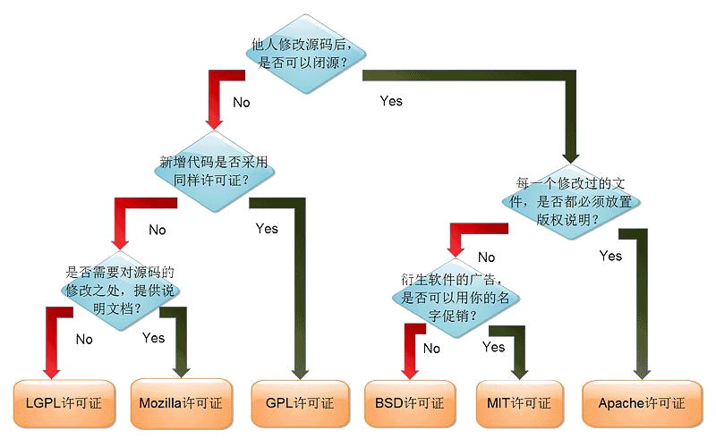
ABC 时代 GPL 许可证传染性问题探讨 - 知乎
ABC 时代 GPL 许可证传染性问题探讨
2017 年 11 月 18 日至 19 日，2017 中国开源年会在上海交大召开，来自集慧智佳的高级咨询师薛亮在开源治理分论坛上发表了题为《ABC 时代 GPL 许可证传染性问题探讨》的演讲，现将演讲的内容进行整理和补充，以飨读者。
我们目前所处的时代被称为“ABC（AI、Big Data、Cloud）时代”，也是大量采用开源软件的时代。在这个过程中，不可避免地会遇到开源软件合规的问题，而其中最让人感到困惑的，可以说就是 GPL 许可证传染性问题。那么 GPL 软件是不是真的像传说中的避之唯恐不及，其传染性风险令人谈之色变呢？本次演讲和大家简要探讨一下 GPL 传染性问题。
 演讲内容主要包括四个部分，第一部分为“从合规到牟利”，简要介绍目前开源软件合规环境的变化情况。第二部分为“ GPL 传染性判断”，介绍从实务角度考虑，GPL 传染性判断的流程、方法和原则。第三部分为“MongoDB 案例”，介绍了采用 AGPL 许可证的 MongoDB 案例。第四部分为“开源智慧专栏”，简单介绍集慧智佳与 Linux 中国合作开办的“开源智慧专栏”。
第一部分题目为“从合规到牟利”，介绍了近些年开源软件合规和诉讼态势发生的变化，已经从单纯的“寻求合规”转变为“追求牟利”，而这种变化使得开源软件用户的合规风险变得越来越严重。
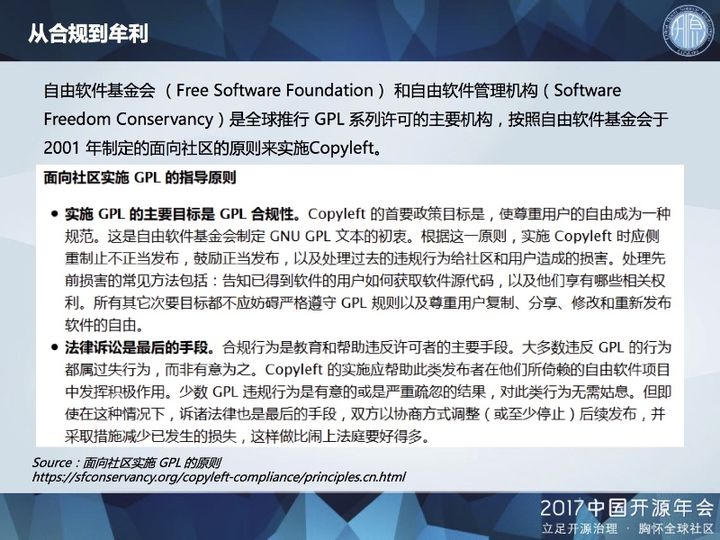
以最为严格的 GPL 许可证来说，自由软件基金会和自由软件管理机构是全球推行 GPL 许可的主要机构，其追求的主要目标之一是实现 GPL 的合规，对于那些在无意中违反 GPL 许可证的行为，本着“惩前毖后，治病救人”的原则，大多数还是以教育和帮助为主，并不会刻意追求罚款、赔偿等。
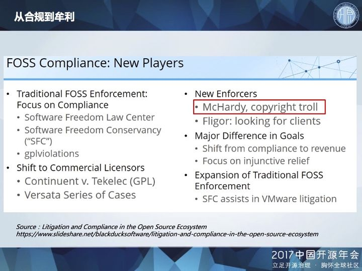
但是，随着开源软件合规和诉讼生态的发展，涌现了更多类型的新玩家。根据国外律师的观察，除了诸如 SFLC、SFC 等传统的合规机构之外，近年来出现了比较激进的例如 McHardy 这样的版权流氓Copyright Troll，或者说是 GPL 牟利者，其主要目标已经从合规转变为牟利，要求对违规行为颁发禁令或进行赔偿。
根据“开源智慧专栏”发表的翻译文章《如何应对开源软件的版权牟利者？ 开源律师说这样做！》，GPL 牟利者 McHardy 已经骚扰了 50 多个目标，据说有些国内企业也在其中。
面对越来越复杂的开源软件合规态势，作为开源软件用户来说，对于许可证合规问题，需要引起重视，而 GPL 传染性显然是其中最让人头疼的问题。
第二部分我们具体探讨一下“GPL 传染性判断”，主要是根据我们的研究和实务经验，对于如何评估和判断GPL软件的传染性进行梳理和总结。
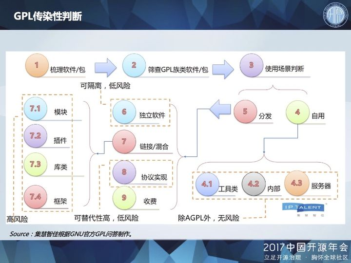
对于软件企业的技术人员来说，开源代码是否好用，是他们选用开源代码的重要标准之一，而不会过多考虑许可证问题。但对于企业的合规和法律部门来说，自己企业的技术人员使用了哪些开源软件，这些开源软件采用哪些许可证，则是需要进行排查和梳理，做到心中有数。而对于采用 GPL 许可证的软件，为了避免传染性，是不是必须简单地“一刀切”，绝对禁止使用呢？
我们认为，根据 GPL 软件类型和使用场景的不同，其传染性风险也存在不同。其中一个关键的分界点，在于自用与分发。
自用的范畴比较广泛，在公司个人、部门使用，甚至在公司内部分发，都可以自由使用。
对于编译器、解释器等工具类软件，其主要作用是对代码进行加工，可以归为自用的范畴，但也要区分 GPL 工具类软件是否将自身代码混进其所加工的代码。例如 GCC 是 GPL 编译器，但使用 GCC 不会感染被编译的源文件。
对于采用 GPL、LGPL 许可证的软件，如果放在服务器/云上以 SaaS 方式对外提供服务，也可以算作自用的范畴。但是，采用 AGPL 许可证的软件除外，AGPL 专门针对 SaaS 方式进行约束。
我们接着再来看分发，对于一些必须分发出去的 GPL 软件，其类型也有多种。对于一些相对独立的软件，需要注意与自有代码是各自独立还是复杂的糅合，是否构成了结合作品。对于诸如 MQTT 等协议实现类的软件，其实现方式有多种，可以选择采用宽松许可证的开源软件。许多开源软件也采用双重授权，如果担心开源版本的风险问题，可以选择花钱购买其商业授权版本。
对于自有代码与 GPL 软件的链接/混合，也分几种情况。例如对于自有模块 A 和 GPL 模块 B，需要根据两者之间的通信亲密程度以及传输数据的复杂程度，判断两者是否构成了结合作品。对于 GPL 插件，需要分析自有代码主程序对其调用的方式，判断是否造成传染。
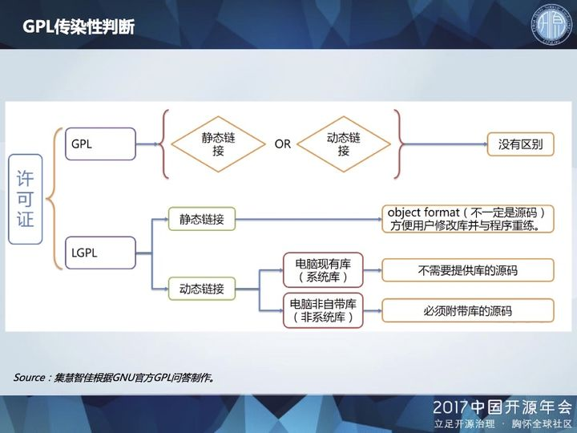
对于自有代码与 GPL 库的链接，根据 GPL 许可证，无论是采用静态链接或动态链接方式，都会造成自有代码被传染，必须进行公开。而之后发表的 LGPL 许可证，则对 GPL 库的链接稍微放松了限制。由于 LGPL 专门针对库而制定，采用 LGPL 的库相对来说应该已经考虑了对调用程序的影响，更容易避免被“传染”。
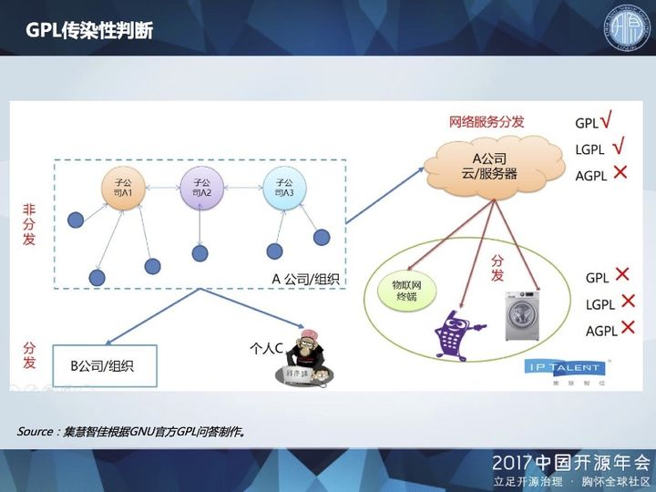
我们再来看一下“自用”，GNU 官方问答对于自用的解释非常宽泛，在一个企业集团的总公司、分公司、子公司等使用，都可以算作自用的范畴，不构成分发。
对于采用 GPL、LGPL 许可证的软件，如果放在服务器/云上以 SaaS 方式对外提供服务，不构成分发，但如果将其部署在用户终端上，则构成分发，带来传染性问题。
对于采用 AGPL 许可证的软件，即便是运行在服务器/云上，如果后续用户对其源代码进行了修改，也必须将修改版本发布出来。
需要注意的是，某个GPL软件的使用场景如果发生变化，之前对其传染性风险的判断也有可能变化，需要根据新的使用场景重新评估。
第三部分我们来看一个案例，MongoDB 是一个非常典型的使用 AGPL 许可证的开源软件。国外有文章甚至开玩笑说，正是因为有了 MongoDB，人们对 AGPL 许可证的看法有了明显改变，从 “never use AGPL” 转变成 “never use AGPL except for Mongo DB”。
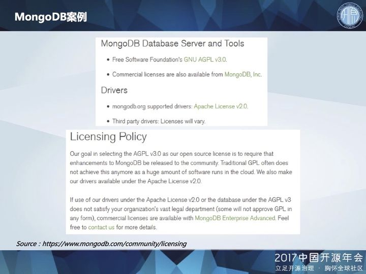
具体看一下 MongoDB 的许可政策。MongoDB 的数据库部分采用严格的 AGPL v3.0 许可证，并且是双重许可，用户既可以选择开源版本，也可以选择商业授权版本。MongoDB 的驱动部分则采用宽松的 Apache v2.0 许可证。
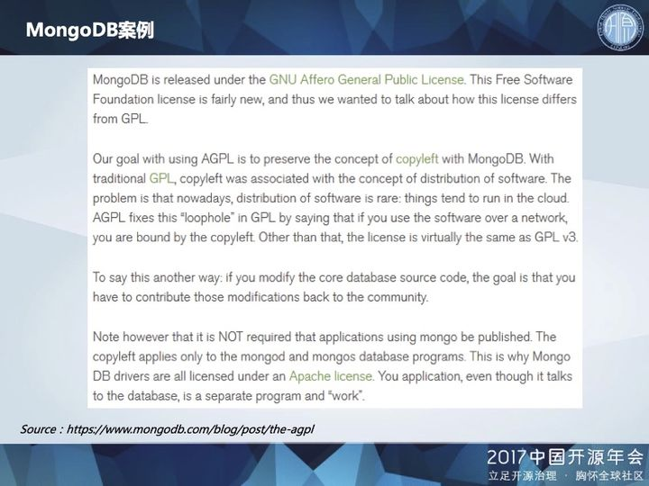
通过对数据库和驱动分别适用不同的许可证，MongoDB 在坚守其自由软件本质的同时，也为用户大开方便之门。
其中需要注意，如果用户修改了 MongoDB 核心数据库的源代码，则必须将修改版本发布出来，回馈给社区。
反之，如果用户的程序仅是使用 MongoDB 数据库，没有对数据库源代码进行修改，则不必发布该用户程序。Copyleft 仅适用于 mongod 和 mongos 数据库，而驱动则采用 Apache 许可证，所以用户的程序如果通过 MongoDB 官方推荐的驱动与数据库进行交互，也不被视为 AGPL 范畴下的结合作品，而是单独的程序或作品，无需担心被传染。
从 MongoDB 这个案例可以看出，一些开源软件的著作权人为了保护和推广自己的开源项目，可以说是“煞费苦心”，绞尽脑汁地在许可证方面进行精巧的设计，给出一些“例外声明”，为用户“开后门”，让用户可以相对比较放心地使用，推动了这些开源软件的迅速普及。
“开源智慧专栏”由集慧智佳与国内领先的开源社区 Linux 中国合作创办，聚焦开源软件的知识产权问题，旨在传播域外动态，梳理经典判例，翻译重要文本，关注行业热点，分享实务经验。
在第三部分简要介绍了 GPL 传染性判断的方法和原则，其主要依据是自由软件基金会发布的 GPL 许可证官方问答。我们也对这个问题进行了翻译，陆续发表在本专栏中。此外，对于此前闹得沸沸扬扬的 Facebook 公司 react 许可证事件，我们也进行了实时的跟踪和解读。
演讲内容主要包括四个部分，第一部分为“从合规到牟利”，简要介绍目前开源软件合规环境的变化情况。第二部分为“ GPL 传染性判断”，介绍从实务角度考虑，GPL 传染性判断的流程、方法和原则。第三部分为“MongoDB 案例”，介绍了采用 AGPL 许可证的 MongoDB 案例。第四部分为“开源智慧专栏”，简单介绍集慧智佳与 Linux 中国合作开办的“开源智慧专栏”。
第一部分题目为“从合规到牟利”，介绍了近些年开源软件合规和诉讼态势发生的变化，已经从单纯的“寻求合规”转变为“追求牟利”，而这种变化使得开源软件用户的合规风险变得越来越严重。
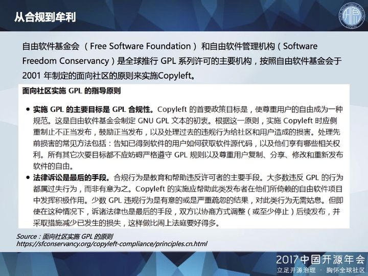
以最为严格的 GPL 许可证来说，自由软件基金会和自由软件管理机构是全球推行 GPL 许可的主要机构，其追求的主要目标之一是实现 GPL 的合规，对于那些在无意中违反 GPL 许可证的行为，本着“惩前毖后，治病救人”的原则，大多数还是以教育和帮助为主，并不会刻意追求罚款、赔偿等。
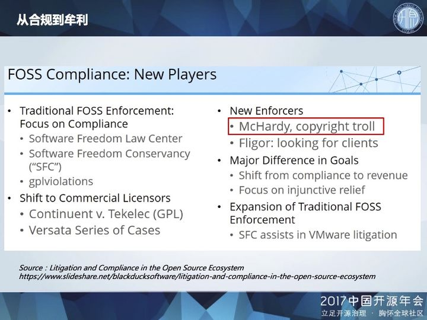
但是，随着开源软件合规和诉讼生态的发展，涌现了更多类型的新玩家。根据国外律师的观察，除了诸如 SFLC、SFC 等传统的合规机构之外，近年来出现了比较激进的例如 McHardy 这样的版权流氓Copyright Troll，或者说是 GPL 牟利者，其主要目标已经从合规转变为牟利，要求对违规行为颁发禁令或进行赔偿。
根据“开源智慧专栏”发表的翻译文章《如何应对开源软件的版权牟利者？ 开源律师说这样做！》，GPL 牟利者 McHardy 已经骚扰了 50 多个目标，据说有些国内企业也在其中。
面对越来越复杂的开源软件合规态势，作为开源软件用户来说，对于许可证合规问题，需要引起重视，而 GPL 传染性显然是其中最让人头疼的问题。
第二部分我们具体探讨一下“GPL 传染性判断”，主要是根据我们的研究和实务经验，对于如何评估和判断GPL软件的传染性进行梳理和总结。
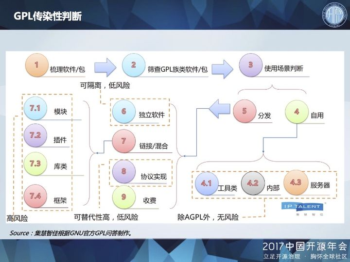
对于软件企业的技术人员来说，开源代码是否好用，是他们选用开源代码的重要标准之一，而不会过多考虑许可证问题。但对于企业的合规和法律部门来说，自己企业的技术人员使用了哪些开源软件，这些开源软件采用哪些许可证，则是需要进行排查和梳理，做到心中有数。而对于采用 GPL 许可证的软件，为了避免传染性，是不是必须简单地“一刀切”，绝对禁止使用呢？
我们认为，根据 GPL 软件类型和使用场景的不同，其传染性风险也存在不同。其中一个关键的分界点，在于自用与分发。
自用的范畴比较广泛，在公司个人、部门使用，甚至在公司内部分发，都可以自由使用。
对于编译器、解释器等工具类软件，其主要作用是对代码进行加工，可以归为自用的范畴，但也要区分 GPL 工具类软件是否将自身代码混进其所加工的代码。例如 GCC 是 GPL 编译器，但使用 GCC 不会感染被编译的源文件。
对于采用 GPL、LGPL 许可证的软件，如果放在服务器/云上以 SaaS 方式对外提供服务，也可以算作自用的范畴。但是，采用 AGPL 许可证的软件除外，AGPL 专门针对 SaaS 方式进行约束。
我们接着再来看分发，对于一些必须分发出去的 GPL 软件，其类型也有多种。对于一些相对独立的软件，需要注意与自有代码是各自独立还是复杂的糅合，是否构成了结合作品。对于诸如 MQTT 等协议实现类的软件，其实现方式有多种，可以选择采用宽松许可证的开源软件。许多开源软件也采用双重授权，如果担心开源版本的风险问题，可以选择花钱购买其商业授权版本。
对于自有代码与 GPL 软件的链接/混合，也分几种情况。例如对于自有模块 A 和 GPL 模块 B，需要根据两者之间的通信亲密程度以及传输数据的复杂程度，判断两者是否构成了结合作品。对于 GPL 插件，需要分析自有代码主程序对其调用的方式，判断是否造成传染。
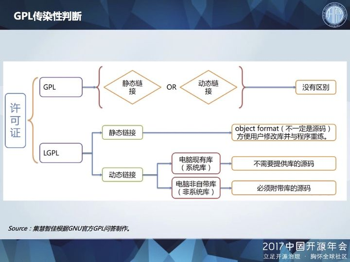
对于自有代码与 GPL 库的链接，根据 GPL 许可证，无论是采用静态链接或动态链接方式，都会造成自有代码被传染，必须进行公开。而之后发表的 LGPL 许可证，则对 GPL 库的链接稍微放松了限制。由于 LGPL 专门针对库而制定，采用 LGPL 的库相对来说应该已经考虑了对调用程序的影响，更容易避免被“传染”。
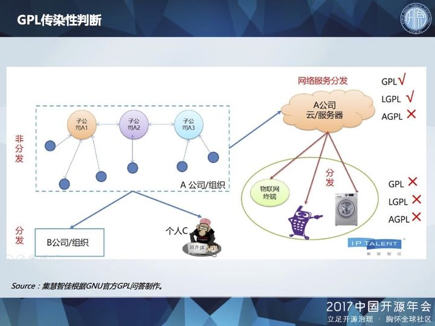
我们再来看一下“自用”，GNU 官方问答对于自用的解释非常宽泛，在一个企业集团的总公司、分公司、子公司等使用，都可以算作自用的范畴，不构成分发。
对于采用 GPL、LGPL 许可证的软件，如果放在服务器/云上以 SaaS 方式对外提供服务，不构成分发，但如果将其部署在用户终端上，则构成分发，带来传染性问题。
对于采用 AGPL 许可证的软件，即便是运行在服务器/云上，如果后续用户对其源代码进行了修改，也必须将修改版本发布出来。
需要注意的是，某个GPL软件的使用场景如果发生变化，之前对其传染性风险的判断也有可能变化，需要根据新的使用场景重新评估。
第三部分我们来看一个案例，MongoDB 是一个非常典型的使用 AGPL 许可证的开源软件。国外有文章甚至开玩笑说，正是因为有了 MongoDB，人们对 AGPL 许可证的看法有了明显改变，从 “never use AGPL” 转变成 “never use AGPL except for Mongo DB”。
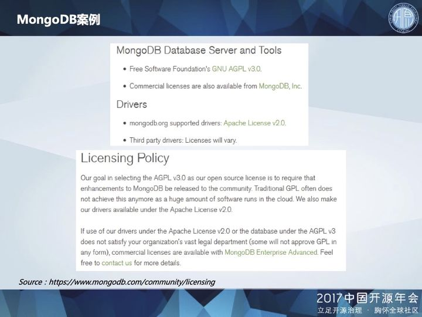
具体看一下 MongoDB 的许可政策。MongoDB 的数据库部分采用严格的 AGPL v3.0 许可证，并且是双重许可，用户既可以选择开源版本，也可以选择商业授权版本。MongoDB 的驱动部分则采用宽松的 Apache v2.0 许可证。
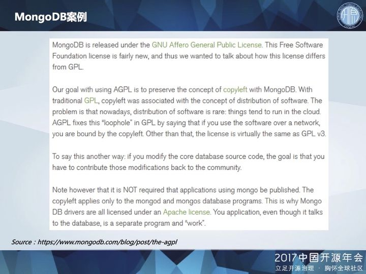
通过对数据库和驱动分别适用不同的许可证，MongoDB 在坚守其自由软件本质的同时，也为用户大开方便之门。
其中需要注意，如果用户修改了 MongoDB 核心数据库的源代码，则必须将修改版本发布出来，回馈给社区。
反之，如果用户的程序仅是使用 MongoDB 数据库，没有对数据库源代码进行修改，则不必发布该用户程序。Copyleft 仅适用于 mongod 和 mongos 数据库，而驱动则采用 Apache 许可证，所以用户的程序如果通过 MongoDB 官方推荐的驱动与数据库进行交互，也不被视为 AGPL 范畴下的结合作品，而是单独的程序或作品，无需担心被传染。
从 MongoDB 这个案例可以看出，一些开源软件的著作权人为了保护和推广自己的开源项目，可以说是“煞费苦心”，绞尽脑汁地在许可证方面进行精巧的设计，给出一些“例外声明”，为用户“开后门”，让用户可以相对比较放心地使用，推动了这些开源软件的迅速普及。
“开源智慧专栏”由集慧智佳与国内领先的开源社区 Linux 中国合作创办，聚焦开源软件的知识产权问题，旨在传播域外动态，梳理经典判例，翻译重要文本，关注行业热点，分享实务经验。
在第三部分简要介绍了 GPL 传染性判断的方法和原则，其主要依据是自由软件基金会发布的 GPL 许可证官方问答。我们也对这个问题进行了翻译，陆续发表在本专栏中。此外，对于此前闹得沸沸扬扬的 Facebook 公司 react 许可证事件，我们也进行了实时的跟踪和解读。
演讲内容主要包括四个部分，第一部分为“从合规到牟利”，简要介绍目前开源软件合规环境的变化情况。第二部分为“ GPL 传染性判断”，介绍从实务角度考虑，GPL 传染性判断的流程、方法和原则。第三部分为“MongoDB 案例”，介绍了采用 AGPL 许可证的 MongoDB 案例。第四部分为“开源智慧专栏”，简单介绍集慧智佳与 Linux 中国合作开办的“开源智慧专栏”。
第一部分题目为“从合规到牟利”，介绍了近些年开源软件合规和诉讼态势发生的变化，已经从单纯的“寻求合规”转变为“追求牟利”，而这种变化使得开源软件用户的合规风险变得越来越严重。
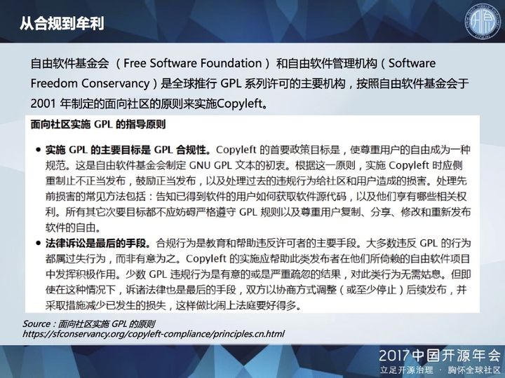
以最为严格的 GPL 许可证来说，自由软件基金会和自由软件管理机构是全球推行 GPL 许可的主要机构，其追求的主要目标之一是实现 GPL 的合规，对于那些在无意中违反 GPL 许可证的行为，本着“惩前毖后，治病救人”的原则，大多数还是以教育和帮助为主，并不会刻意追求罚款、赔偿等。
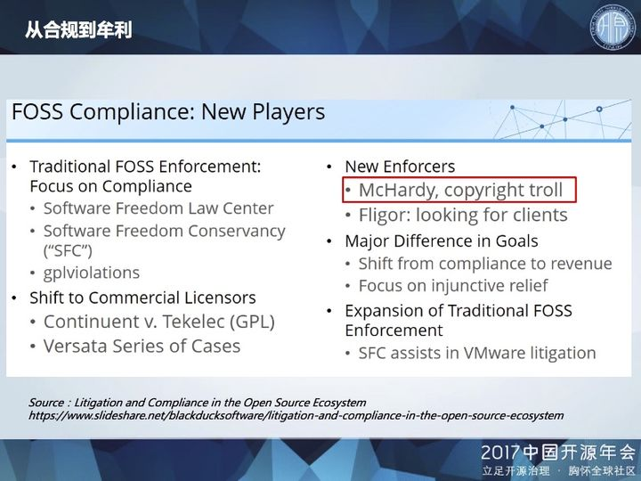
但是，随着开源软件合规和诉讼生态的发展，涌现了更多类型的新玩家。根据国外律师的观察，除了诸如 SFLC、SFC 等传统的合规机构之外，近年来出现了比较激进的例如 McHardy 这样的版权流氓Copyright Troll，或者说是 GPL 牟利者，其主要目标已经从合规转变为牟利，要求对违规行为颁发禁令或进行赔偿。
根据“开源智慧专栏”发表的翻译文章《如何应对开源软件的版权牟利者？ 开源律师说这样做！》，GPL 牟利者 McHardy 已经骚扰了 50 多个目标，据说有些国内企业也在其中。
面对越来越复杂的开源软件合规态势，作为开源软件用户来说，对于许可证合规问题，需要引起重视，而 GPL 传染性显然是其中最让人头疼的问题。
第二部分我们具体探讨一下“GPL 传染性判断”，主要是根据我们的研究和实务经验，对于如何评估和判断GPL软件的传染性进行梳理和总结。
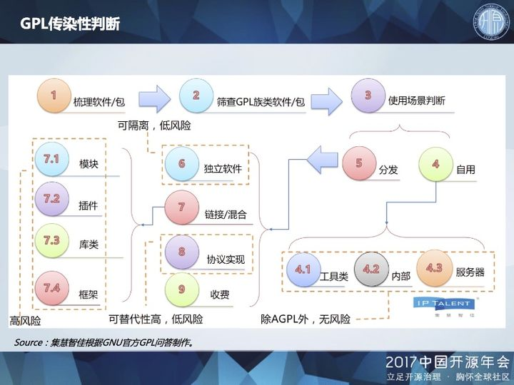
对于软件企业的技术人员来说，开源代码是否好用，是他们选用开源代码的重要标准之一，而不会过多考虑许可证问题。但对于企业的合规和法律部门来说，自己企业的技术人员使用了哪些开源软件，这些开源软件采用哪些许可证，则是需要进行排查和梳理，做到心中有数。而对于采用 GPL 许可证的软件，为了避免传染性，是不是必须简单地“一刀切”，绝对禁止使用呢？
我们认为，根据 GPL 软件类型和使用场景的不同，其传染性风险也存在不同。其中一个关键的分界点，在于自用与分发。
自用的范畴比较广泛，在公司个人、部门使用，甚至在公司内部分发，都可以自由使用。
对于编译器、解释器等工具类软件，其主要作用是对代码进行加工，可以归为自用的范畴，但也要区分 GPL 工具类软件是否将自身代码混进其所加工的代码。例如 GCC 是 GPL 编译器，但使用 GCC 不会感染被编译的源文件。
对于采用 GPL、LGPL 许可证的软件，如果放在服务器/云上以 SaaS 方式对外提供服务，也可以算作自用的范畴。但是，采用 AGPL 许可证的软件除外，AGPL 专门针对 SaaS 方式进行约束。
我们接着再来看分发，对于一些必须分发出去的 GPL 软件，其类型也有多种。对于一些相对独立的软件，需要注意与自有代码是各自独立还是复杂的糅合，是否构成了结合作品。对于诸如 MQTT 等协议实现类的软件，其实现方式有多种，可以选择采用宽松许可证的开源软件。许多开源软件也采用双重授权，如果担心开源版本的风险问题，可以选择花钱购买其商业授权版本。
对于自有代码与 GPL 软件的链接/混合，也分几种情况。例如对于自有模块 A 和 GPL 模块 B，需要根据两者之间的通信亲密程度以及传输数据的复杂程度，判断两者是否构成了结合作品。对于 GPL 插件，需要分析自有代码主程序对其调用的方式，判断是否造成传染。
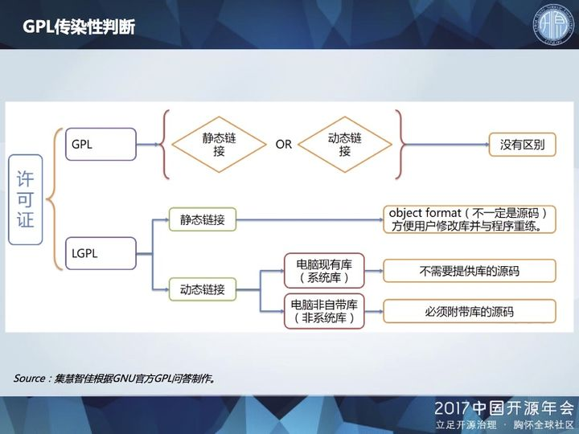
对于自有代码与 GPL 库的链接，根据 GPL 许可证，无论是采用静态链接或动态链接方式，都会造成自有代码被传染，必须进行公开。而之后发表的 LGPL 许可证，则对 GPL 库的链接稍微放松了限制。由于 LGPL 专门针对库而制定，采用 LGPL 的库相对来说应该已经考虑了对调用程序的影响，更容易避免被“传染”。
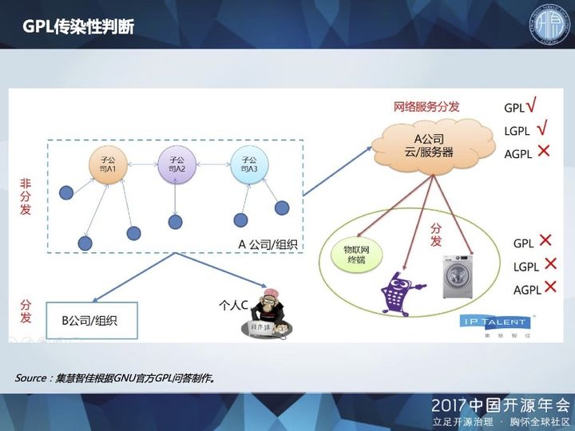
我们再来看一下“自用”，GNU 官方问答对于自用的解释非常宽泛，在一个企业集团的总公司、分公司、子公司等使用，都可以算作自用的范畴，不构成分发。
对于采用 GPL、LGPL 许可证的软件，如果放在服务器/云上以 SaaS 方式对外提供服务，不构成分发，但如果将其部署在用户终端上，则构成分发，带来传染性问题。
对于采用 AGPL 许可证的软件，即便是运行在服务器/云上，如果后续用户对其源代码进行了修改，也必须将修改版本发布出来。
需要注意的是，某个GPL软件的使用场景如果发生变化，之前对其传染性风险的判断也有可能变化，需要根据新的使用场景重新评估。
第三部分我们来看一个案例，MongoDB 是一个非常典型的使用 AGPL 许可证的开源软件。国外有文章甚至开玩笑说，正是因为有了 MongoDB，人们对 AGPL 许可证的看法有了明显改变，从 “never use AGPL” 转变成 “never use AGPL except for Mongo DB”。
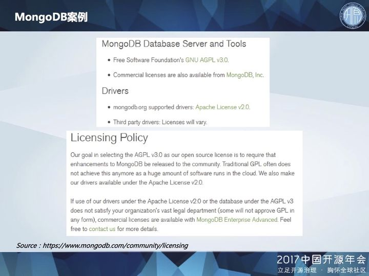
具体看一下 MongoDB 的许可政策。MongoDB 的数据库部分采用严格的 AGPL v3.0 许可证，并且是双重许可，用户既可以选择开源版本，也可以选择商业授权版本。MongoDB 的驱动部分则采用宽松的 Apache v2.0 许可证。
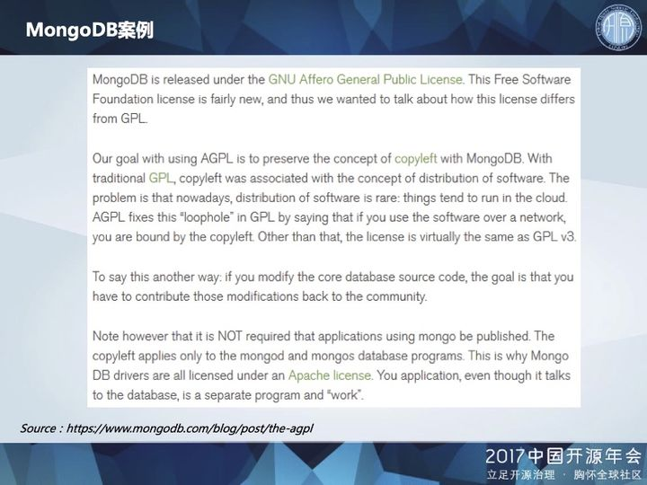
通过对数据库和驱动分别适用不同的许可证，MongoDB 在坚守其自由软件本质的同时，也为用户大开方便之门。
其中需要注意，如果用户修改了 MongoDB 核心数据库的源代码，则必须将修改版本发布出来，回馈给社区。
反之，如果用户的程序仅是使用 MongoDB 数据库，没有对数据库源代码进行修改，则不必发布该用户程序。Copyleft 仅适用于 mongod 和 mongos 数据库，而驱动则采用 Apache 许可证，所以用户的程序如果通过 MongoDB 官方推荐的驱动与数据库进行交互，也不被视为 AGPL 范畴下的结合作品，而是单独的程序或作品，无需担心被传染。
从 MongoDB 这个案例可以看出，一些开源软件的著作权人为了保护和推广自己的开源项目，可以说是“煞费苦心”，绞尽脑汁地在许可证方面进行精巧的设计，给出一些“例外声明”，为用户“开后门”，让用户可以相对比较放心地使用，推动了这些开源软件的迅速普及。
“开源智慧专栏”由集慧智佳与国内领先的开源社区 Linux 中国合作创办，聚焦开源软件的知识产权问题，旨在传播域外动态，梳理经典判例，翻译重要文本，关注行业热点，分享实务经验。
在第三部分简要介绍了 GPL 传染性判断的方法和原则，其主要依据是自由软件基金会发布的 GPL 许可证官方问答。我们也对这个问题进行了翻译，陆续发表在本专栏中。此外，对于此前闹得沸沸扬扬的 Facebook 公司 react 许可证事件，我们也进行了实时的跟踪和解读。
五种开源协议的比较(BSD，Apache，GPL，LGPL，MIT)
五种开源协议的比较(BSD，Apache，GPL，LGPL，MIT)
当Adobe、Microsoft、Sun等一系列巨头开始表现出对”开源”的青睐时，”开源”的时代即将到来！现今存在的开源协议很多，而经过Open Source Initiative组织通过批准的开源协议目前有58
种(http：//www.opensource.org/licenses /alphabetical)。我们在常见的开源协议如BSD，
GPL，LGPL，MIT等都是OSI批准的协议。如果要开源自己的代码，最好也是选择这些被批准的开
源协议。这里我们来看四种最常用的开源协议及它们的适用范围，供那些准备开源或者使用开源产品的
开发人员/厂家参考。
BSD开源协议(original BSD license、FreeBSD license、Original BSD license)
BSD开源协议是一个给于使用者很大自由的协议。基本上使用者可以”为所欲为”，可以自由
的使用，修改源代码，也可以将修改后的代码作为开源或者专有软件再发布。
但”为所欲为”的前提当你发布使用了BSD协议的代码，或则以BSD协议代码为基础做二次开
发自己的产品时，需要满足三个条件：
如果再发布的产品中包含源代码，则在源代码中必须带有原来代码中的BSD协议。如果再发布
的只是二进制类库/软件，则需要在类库/软件的文档和版权声明中包含原来代码中的BSD协议。
不可以用开源代码的作者/机构名字和原来产品的名字做市场推广。
BSD代码鼓励代码共享，但需要尊重代码作者的著作权。BSD由于允许使用者修改和重新发布
代码，也允许使用或在BSD代码上开发商业软件发布和销售，因此是对商业集成很友好的协议。而
很多的公司企业在选用开源产品的时候都首选BSD协议，因为可以完全控制这些第三方的代码，在
必要的时候可以修改或者二次开发。
Apache Licence 2.0(Apache License， Version 2.0、Apache License， Version
1.1、Apache License， Version 1.0)
Apache Licence是著名的非盈利开源组织Apache采用的协议。该协议和BSD类似，同样
鼓励代码共享和尊重原作者的著作权，同样允许代码修改，再发布(作为开源或商业软件)。需要满足
的条件也和BSD类似：
需要给代码的用户一份Apache Licence，如果你修改了代码，需要在被修改的文件中说明。
在延伸的代码中(修改和有源代码衍生的代码中)需要带有原来代码中的协议，商标，专利声明和其他
原来作者规定需要包含的说明。
如果再发布的产品中包含一个Notice文件，则在Notice文件中需要带有Apache Licence。
你可以在Notice中增加自己的许可，但不可以表现为对Apache Licence构成更改。
Apache Licence也是对商业应用友好的许可。使用者也可以在需要的时候修改代码来满足需
要并作为开源或商业产品发布/销售。
GPL(GNU General Public License)
我们很熟悉的Linux就是采用了GPL。GPL协议和BSD，Apache Licence等鼓励代码重用的
许可很不一样。GPL的出发点是代码的开源/免费使用和引用/修改/衍生代码的开源/免费使用，但
不允许修改后和衍生的代码做为闭源的商业软件发布和销售。这也就是为什么我们能用免费的各种
linux，包括商业公司的linux和linux上各种各样的由个人，组织，以及商业软件公司开发的免费软
件了。
GPL协议的主要内容是只要在一个软件中使用(”使用”指类库引用，修改后的代码或者衍生代
码)GPL协议的产品，则该软件产品必须也采用GPL协议，既必须也是开源和免费。这就是所谓的
”传染性”。GPL协议的产品作为一个单独的产品使用没有任何问题，还可以享受免费的优势。
由于GPL严格要求使用了GPL类库的软件产品必须使用GPL协议，对于使用GPL协议的开源
代码，商业软件或者对代码有保密要求的部门就不适合集成/采用作为类库和二次开发的基础。
其它细节如再发布的时候需要伴随GPL协议等和BSD/Apache等类似。
LGPL(GNU Lesser General Public License)
LGPL是GPL的一个为主要为类库使用设计的开源协议。和GPL要求任何使用/修改/衍生之
GPL类库的的软件必须采用GPL协议不同。LGPL允许商业软件通过类库引用(link)方式使用LGPL
类库而不需要开源商业软件的代码。这使得采用LGPL协议的开源代码可以被商业软件作为类库引用
并发布和销售。
但是如果修改LGPL协议的代码或者衍生，则所有修改的代码，涉及修改部分的额外代码和衍生
的代码都必须采用LGPL协议。因此LGPL协议的开源代码很适合作为第三方类库被商业软件引用，
但不适合希望以LGPL协议代码为基础，通过修改和衍生的方式做二次开发的商业软件采用。
GPL/LGPL都保障原作者的知识产权，避免有人利用开源代码复制并开发类似的产品
MIT(MIT)
MIT是和BSD一样宽范的许可协议，作者只想保留版权，而无任何其他了限制.也就是说，你必
须在你的发行版里包含原许可协议的声明，无论你是以二进制发布的还是以源代码发布的。